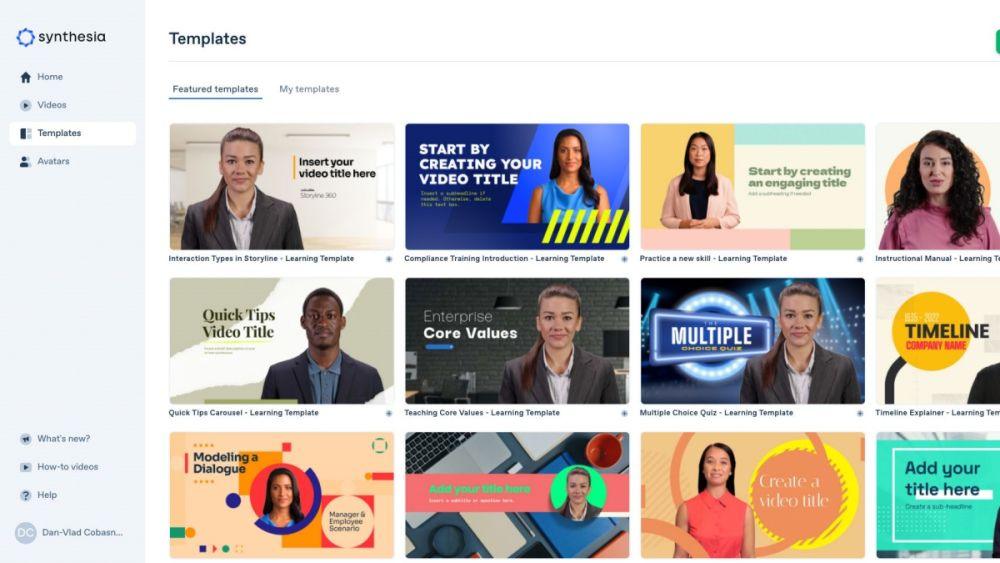

Synthesia - Tạo Video AI Dễ Dàng
1. Đặc Trưng Nổi Bật
Synthesia là một công cụ tạo video AI tiên tiến, cho phép người dùng tạo các video chuyên nghiệp với người dẫn chương trình ảo. Với công nghệ trí tuệ nhân tạo, Synthesia giúp tối ưu hóa quy trình sản xuất video và tiết kiệm thời gian.
- Người Dẫn Ảo Tùy Chỉnh: Lựa chọn từ nhiều mẫu nhân vật và ngôn ngữ khác nhau.
- Hỗ Trợ Đa Ngôn Ngữ: Tạo video bằng hơn 120 ngôn ngữ và giọng đọc.
- Chỉnh Sửa Nhanh Chóng: Thay đổi nội dung video chỉ trong vài phút.

2. Ưu Điểm
- Dễ Sử Dụng: Giao diện thân thiện, không yêu cầu kỹ năng dựng phim.
- Tiết Kiệm Chi Phí: Giảm chi phí thuê nhân sự và thiết bị quay phim.
- Chuyên Nghiệp: Video có chất lượng cao, phù hợp cho các mục đích kinh doanh và giáo dục.
- Tùy Biến Linh Hoạt: Chỉnh sửa nội dung theo nhu cầu riêng biệt.
3. Nhược Điểm
- Phiên Bản Miễn Phí Giới Hạn: Chỉ cung cấp các tính năng cơ bản với watermark.
- Không Hỗ Trợ Quay Thực Tế: Phụ thuộc hoàn toàn vào các nhân vật ảo.
- Hạn Chế Tùy Chọn: Một số tính năng nâng cao yêu cầu gói dịch vụ cao cấp.
4. Gói Sử Dụng
| Gói |
Tính Năng |
Giá |
| Miễn Phí |
Người dẫn ảo cơ bản, video có watermark |
0 VNĐ |
| Pro |
Xóa watermark, nhiều lựa chọn nhân vật |
750.000 VNĐ/tháng |
| Doanh Nghiệp |
Hỗ trợ nhóm, tùy chỉnh cao cấp |
1.500.000 VNĐ/tháng |
5. Dùng Thử Ngay
6. Video hướng dẫn sử dụng